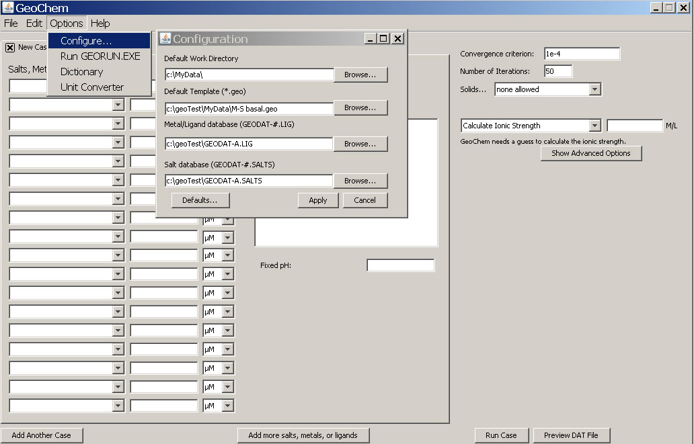

Configuration Menu Bar-

This is where the user designates the default directories for data storage, metal / ligand database, and salts database. If you work extensively with one solution, then it may be worthwhile to designate a default template. The solution will load automatically when the program is opened.
